Product/web designer · Game Design · UI illustration
Carolina Toyoshima
I turn complicated problems into visual experiences people love
using. In my free time I do illustrations, play and make games, and
try to keep my plants alive.
Play the core gameplay loop of Diana, rebuilt in plain
JavaScript so it runs instantly. The full game is built in
Godot 4.
STARPORT CONTROL — OPEN RUN
DIANA
Fly as far as you can and help Diana go home to her family.
space / click to activate flying
02
Games
Diana
Side-scrolling delivery roguelite · In development
Godot 4.6
Game Balancing
Assets and UI
Diana is a side-scrolling delivery roguelite, currently in production.
The loop
Take a contract → fly the lane → get graded on arrival →
spend seeds at the depot → slot new modules → take a harder
contract. Fourteen contracts unlock one at a time, each trading better
pay against faster fuel burn and a longer lane.
Built fast with Claude Code as an MVP, then balanced through early
playtester feedback — the clearest signal was new players losing
the thread in the opening seconds. Every asset and UI element is
hand-made by me.
Design decisions I’d defend in an interview
PACING
Teaching the lane without a tutorial
Hand-authored patterns, not random spawners, give each run a
readable rhythm. Coins trace the line you’re meant to fly
— added after playtesters got lost with no tutorial to
lean on. Difficulty ramps fast, then climbs with no plateau,
with hazard-free stretches so pressure never flattens into
stress.
ART
Hand-made, not generated
Every asset was drawn by hand instead of generated, for a look
that feels specific to this game instead of generic.
Testing & next steps
User testing showed the difficulty needed balancing, which reshaped
how the run ramps. Next up: more variety, so repeat runs keep
surprising players instead of feeling familiar.
A calm, culturally-native puzzle game for Brazil · Product Designer (solo) · 1 month
Figma
Google AI Studio
Google Play
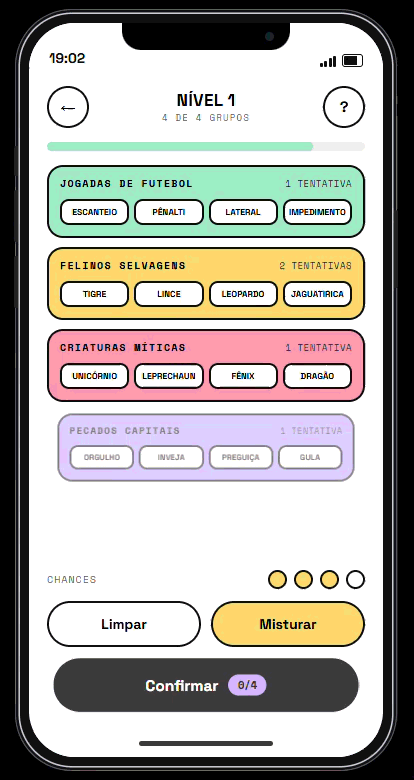
Brazil is the largest mobile gaming market in Latin America, yet its
players (70% self-identified “casual”) are stuck between
culturally distant NYT-style puzzles and loud, ad-stuffed clones in
generic PT-BR. I saw a gap: a quiet, locally-fluent word game built
for the micro-moment — the two minutes in a queue, the
morning coffee.
The craft — a “low-dopamine” design language
Every visual decision opposes slot-machine gaming UI. I chose
neobrutalist minimalism: high contrast, low
saturation, raw borders, honest typography — no glossy bubbles,
no neon, no confetti. The interface gets out of the way so only the
player’s own logic lights up.
Killing the wireframe
Instead of weeks in Figma auto-layout, I prototyped functionally with
AI-assisted coding in Google AI Studio. Logic games live or die on
feel, so I played them, not just looked at them — tuning the
“snap,” the haptics, and difficulty across 21 levels to
find the flow state between boredom and anxiety.
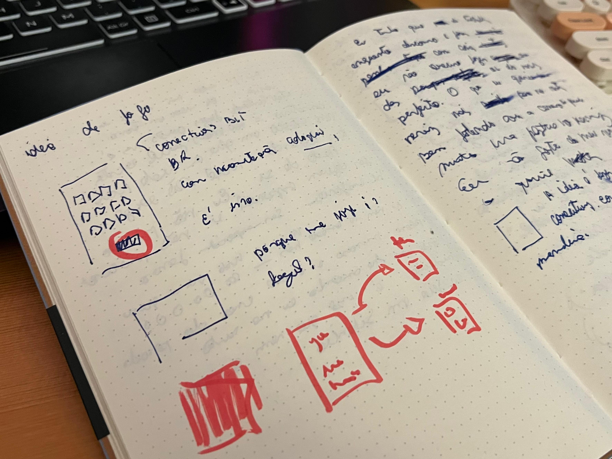
Where it actually started — paper, before any screen.
Testing that changed the product
Five Brazilian puzzle players, tracked for emotional resonance rather
than pass/fail:
CATEGORIES
“Americanized” references
Rebuilt around Brazilian slang, regional food and pop culture to
trigger real aha moments.
DIFFICULTY
Early levels felt mindless
Solved too fast — recalibrated toward non-obvious connections.
FLOW
Stuck players got frustrated
Added a shame-free Reveal escape hatch to protect flow,
with no “Game Over” wall.
ONBOARDING
The UI hid its own entry point
A silent onboarding using motion cues instead of text.
Motion & the web build
The game is playable directly in the browser, no install needed.
Motion does real work: a satisfying snap when four words lock into a
group, smooth reveal transitions, and soft feedback for near-misses
— tuned to reward the solve without overstimulating.
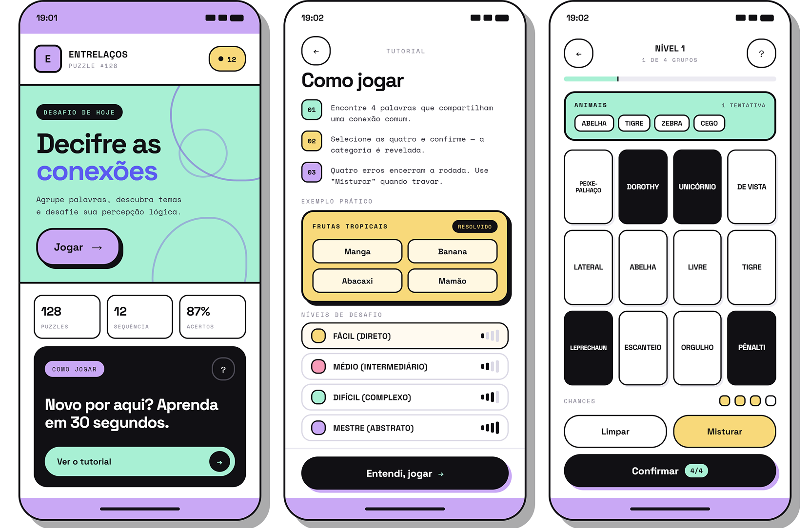
The finished interface: home, onboarding, and a level in progress.
Outcome & north star
Live on Google Play and playable on the web. The core success signal
is session completion rate: is this becoming a
quiet daily ritual, not another notification? It’s also proof
of how I work now — AI handles the how, so the
designer’s value moves to the what and the
why.
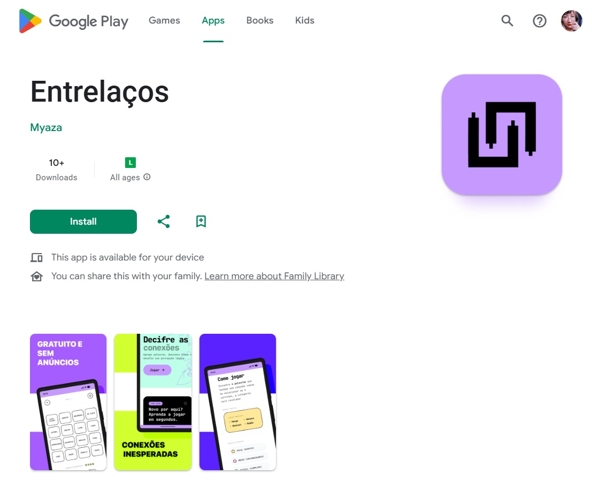
Live on Google Play.
03
Cases
Product & visual design at the intersection of games, brand, and craft.
Pixel Party
Looking-for-players, without the toxicity · Product Design · 2 months
Figma
Finding people to play with online is easy. Finding people worth
playing with is harder: over 80% of matches carry verbal abuse
(Polygon). Pixel Party is a cross-platform LFP tool that lets gamers
spin up a casual co-op, ranked, or in-person board-game session in
minutes, no group-chat back-and-forth.
Visual language
I pulled cues from gaming interfaces: bold colour contrast, clean
typography, subtle motion. Microcopy was rewritten short and active,
so the product feels like starting a match, not filling out a form.
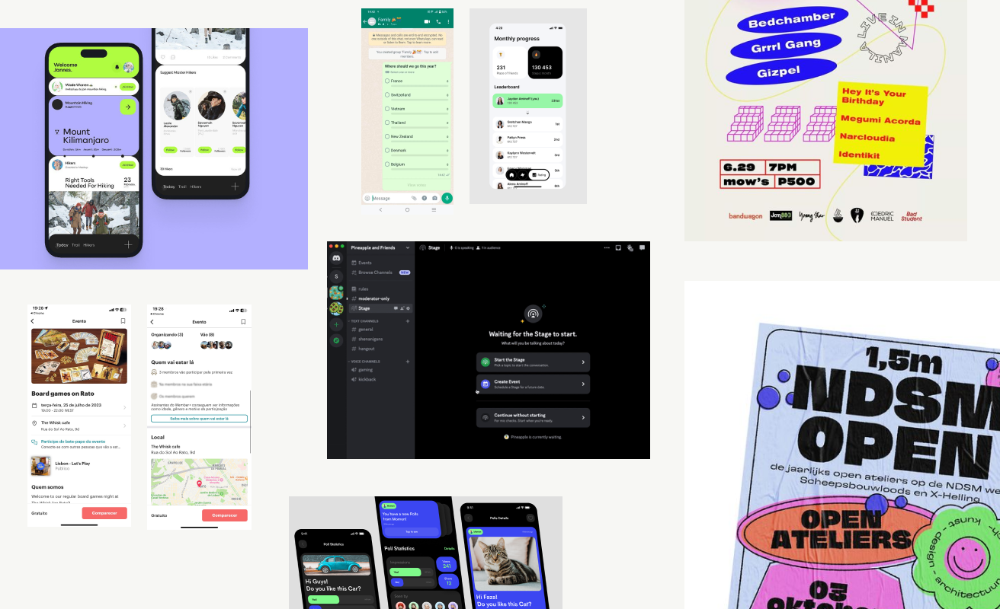
Reference pull from gaming and social apps — tone and pattern before a single screen was drawn.
The flow, stripped to its core
Rapid low-fidelity wireframes, then live user testing, then
high-fidelity. Watching players interact pointed hard at one thing:
speed.
Event creation in just a few steps.
Game and platform selection that feels instant — pre-filled
suggestions, meeting communities where they already are (Discord,
Reddit).
One-tap RSVP, no app download, with an optional “Add to Calendar.”
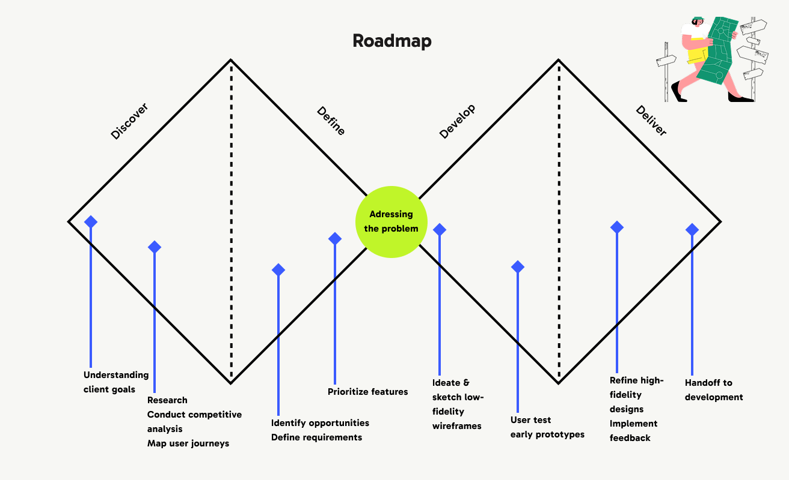
Discover, define, develop, deliver — wireframes to testing to hi-fi.
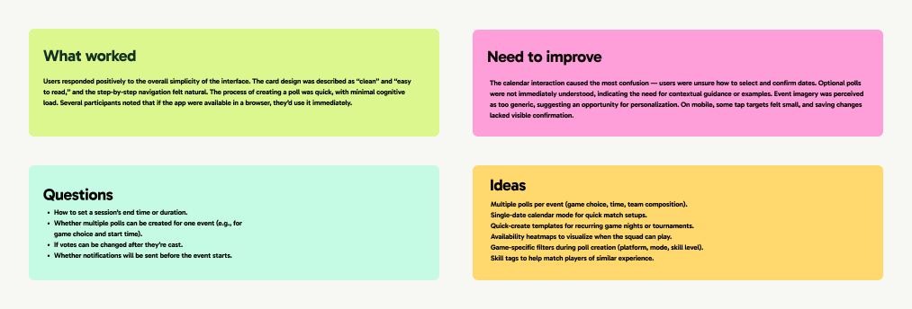
Synthesizing what testers said — what worked, what didn’t, what to build next.
Personas that anchored the decisions
The Competitive Connector, the Social Explorer and the Event Host
— three personas with different friction tolerances that shaped
the onboarding.
Outcome
A validated high-fidelity concept with a clear success model: DAU/MAU
stickiness, event engagement (reactions, replies, RSVPs), and polls
created. The system is built to extend into tournaments and
recurring events.
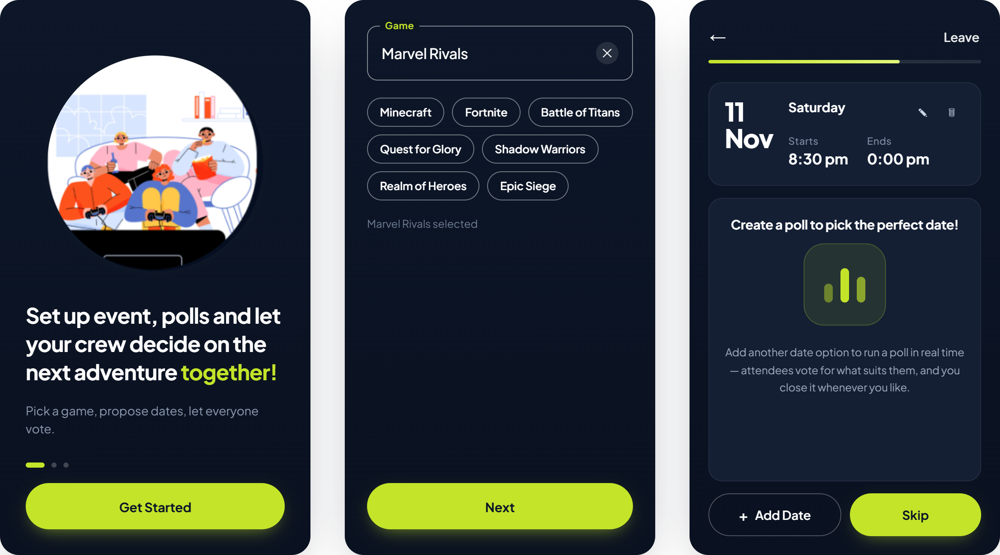
The validated hi-fi flow — onboarding, game picks, and the poll that settles the date.
Nia
An AI assistant, designed to feel human · Product Designer · NFON (Cloudya) · 3 months
Figma
DaisyUI
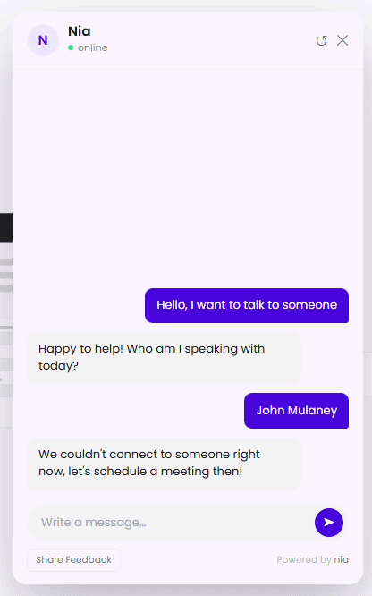
NFON’s move toward AI started with a customer-facing chatbot,
answering product and sales questions in minutes instead of hours. I
mapped the support journey to find where fragmented information and
repetitive questions cost the most time, then designed Nia as the
confident frontline, embedded across the web app and site.
Built from real support tickets
Before any screen, I ran research directly with the support team: a
CSD matrix, structured interviews, and a full journey map of how a
Support Agent moves through a ticket, from first contact to closing
the issue. Their pain points and workarounds shaped the user story
Nia had to solve for.
Support-agent journey map and interview notes — the research behind Nia’s user story.
Design & craft decisions
SYSTEM
One library, native feel everywhere
With a developer, I built a single component library on DaisyUI,
with native iOS adjustments so the widget felt at home on every
surface.
VOICE
Tone as a design material
Nia started robotic, replying with dead ends like “Sorry, I
can’t answer that.” Loosening the guardrails toward a
warmer, natural voice measurably lifted satisfaction scores.
RECOVERY
No dead ends
Clarifying questions, docs, and human escalation kept every
conversation moving instead of stalling out.
CLARITY
Visual guidance
Step-by-step instructions paired with visuals on complex answers.
TIMING
Feedback, timed right
NPS triggered after three messages — enough for the user to
have an opinion, early enough not to interrupt.
Rollout & impact
We launched internally on Confluence first, one of the fastest
releases in NFON’s history, to validate flows and surface
missing documentation before going public. “Have you asked
Nia?” became the office reflex. Ticket deflection rose,
resolution time dropped from days to minutes, and real usage
patterns drove direct improvements to internal and external docs.
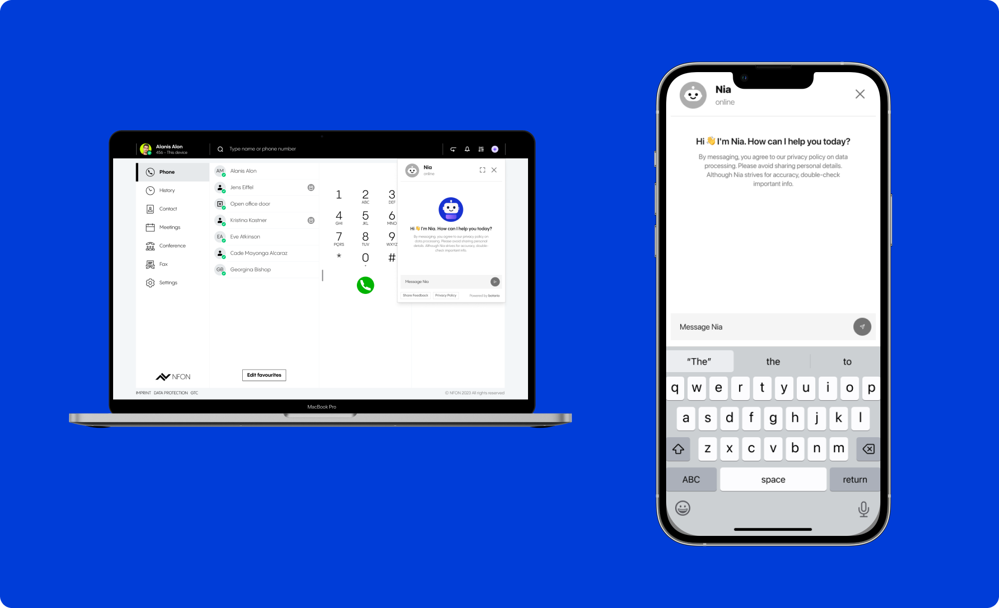
Embedded everywhere — the desktop app and native mobile, not just the website.
Unified Design System
Craft at scale · UI Components · 6 months
A token-based design system unifying a large legacy ecosystem across
web, iOS, Android, and a desktop admin portal.
The consistency problem
Components, colour, and patterns had drifted apart across every
product line. As a team, we ran a full audit of the platform’s
consistency to see how far things had diverged and where to start
fixing it.
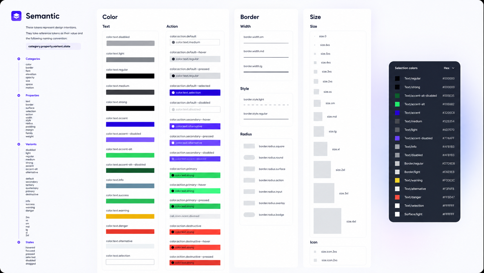
The semantic token layer — colour, border, and size, named by intent.
Picking up where it started
When I arrived, the company already had an initial component
library, built by a designer before me. I updated it: auditing
components across every platform, standardising structures with
developers, and accounting for whitelabel variants, since the same
components had to reskin cleanly for different brands. From there, we
kicked off a hackathon around a design-to-AI-to-code workflow.
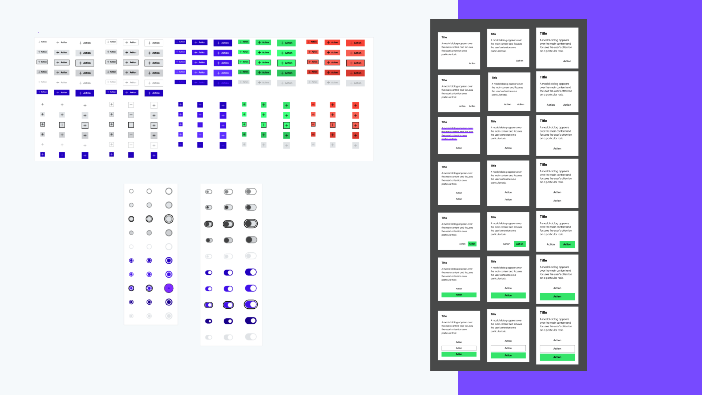
Components built to reskin cleanly across whitelabel themes.
Going live in Storybook
Built around four principles: Innovative, Helpful, Seamless, Focused.
A partial rollout on one product line improved visual consistency,
sped up development with reusable components, and gave design and
engineering a shared language. The system is now going live in
Storybook, with company-wide adoption still ahead.